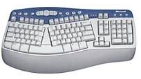
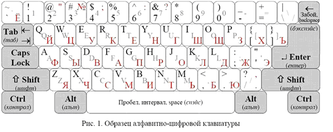
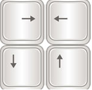
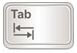
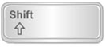
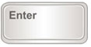
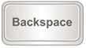

Аппаратное обеспечение ПК
Различают внутренние и внешние устройства.
Персональный компьютер - универсальная техническая система, конфигурацию которой
можно изменять по мере необходимости. Тем ни менее существует понятие базовой
конфигурации. В настоящее время базовая колнфигурация состоит из 4 составляющих:
- Сиситемный блок
- Монитор
- Клавиатура
- Мышь
Системный блок
Системный блок -основной узел , внутри которого установлены наиболее важные компоненты.
Устройства, находящиеся внутри системного блока называются внутренними, а подключаемые
к нему снаружи - внешними и периферийными.
Внутренние устройства системного блока.
- Материнская плата - основная плата компьютера. На ней размещаются:
- Процессор - основная микросхема, выполняющая арифметические и логические
операции - мозг компьютера.
Микропроцессорный комплект (чипсет) - набор микросхем, управляющих работой внутренних устройств и определяющих основные
функциональные возможности материнской платы. - Шины - наборы проводников, по которым происходит обмен сигналами между
внутренними устройствами . - Оперативная память - набор микросхем, предназначенных для временного
хранения данных. - ПЗУ - постоянное запоминающее устройство. В момент включения компьютера его
оперативная память пуста. Но процессору, чтобы начать работать, нужны команды.
Поэтому сразу после включения на адресной шине выставляется стартовый адрес.
Это происходит аппаратно. Этот адрес указывает на ПЗУ. В ПЗУ находятся
"зашитые" программы, которые записываются туда при создании микросхем
ПЗУ и образуют базовую систему ввода-вывода(BIOS - Base Input/Output System).
Основное назначение этого пакета - проверить состав и работоспособность
базовой конфигурации компьютера и обеспечить взаимодействие с клавиатурой,
монитором, жёстким диском и дисководом гибких дисков. - Разъёмы для подключения дополнительных внутренних устройств (слоты).
-
 Жёсткий диск.
Жёсткий диск.
Жёсткий диск - устройство для долговременного хранения больших объёмов данных и программ.На самом деле, это не один диск, а группа дисков, имеющих магнитное покрытие и вращающихся с высокой скоростью. Над поверхностью каждого диска располагается головка чтения-записи. При высоких скоростях вращения возникает аэродинамическая подушка между поверхностью диска и головкой. При изменении силы тока, протекающего через головку, меняется напряженность магнитного поля в зазоре, что вызывает изменение магнитного поля ферромагнитных частиц, образующих покрытие диска. Так осуществляется запись на диск. Чтение происходит в обратном порядке. Намагниченные частицы наводят в головке ЭДС самоиндукции, возникают электромагнитные сигналы, которые усиливаются и передаются на обработку. Управление работой жёсткого диска осуществляется специальным устройством - контроллером жесткого диска. Функции контроллера частично вмонтированы в жёсткий диск, а частично находятся на микросхемах чипсета. Отдельные виды высокопроизводительных контроллеров оставляются на отдельной плате. - Дисковод гибких дисков.
Для оперативного переноса небольших (до 1.4Мб) объёмов
информации используются гибкие диски, которые вставляют в специальный накопитель-
дисковод. - Дисковод для компакт-дисков CD или DVD.
Принцип действия устройства CD состоит
в считывании (записи) данных, с помощью лазерного луча, отражающегося от поверхности
диска. При этом плотность записи, по сравнению с магнитными дисками, очень высокая.
На стандартный CD-диск можно записать до 650Мб. Появление формата DVD ознаменовало
собой переход на новый, более продвинутый, уровень в области хранения и использования
данных, звука и видео. Стандартный однослойный, односторонний диск DVD может хранить
4.7GB данных. Но это не предел -- DVD могут изготавливаться по двухслойному стандарту,
который позволяет увеличить емкость хранимых на одной стороне данных до 8.5GB. Кроме
этого, диски DVD могут быть двухсторонними, что увеличивает емкость одного диска до
17GB. - Видеокарта
Совместно с монитором видеокарта образует видеосистему компьютера.
Видеокарта (видеоадаптер) выполняет все операции, связанные с управлением
экраном монитора и содержит видеопамять в которой хранятся данные об изображении. - Звуковая карта.
Звуковая карта выполняет операции, связанные с обработкой звука, речи,
музыки. Звук воспроизводится через колонки(наушники), подключаемые к выходу звуковой
карты. Имеется также разъём для подключения микрофона. Основным параметром ЗК
является разрядность, Чем выше разрядность, тем меньше погрешность, связанная
с оцифровкой, тем лучше звучание.
Периферийные устройства
Периферийные устройства подключаются к интерфейсам компьютера и предназначены
для выполнения вспомогательных операций. По значению периферийные устройства можно
подразделить на:
- Устройства ввода данных
- Клавиатура - устройство ввода символьных данных.
- Мышь - устройство командного управления
- Сканеры, планшеты(дигитайзеры), цифровые фото и видео-камеры -
Устройства для ввода графических данных - Устройства вывода данных
- Принтеры
Лазерные. Обеспечивают высокое качество печати и высокую скорость.
Струйные. Главное назначение - цветная печать. Превосходят лазерные
по показателю качество/цена. - Устройства хранения данных
- Флэш-диски. Устройство хранения данных на основе энергонезависимой флэш-памяти.
Имеет минимальные размеры и допускает "горячее" поключение через разъём USB,
после чего распознаётся как жёсткий диск. Объэм флэш-диска может составлять
от 32 Мб до нескольких Гб. - Устройства обмена данными
- Модем
Устройство, предназначенное для обмена информацией между удалёнными
компьютерами по каналам связи. В зависимости от типа канала модемы
подразделяют на радио-модемы, кабельные и т.д. Наиболее распостранены
модемы для телефонных линий. - алфавитно-цифровые клавиши;
- функциональные клавиши;
- управляющие клавиши;
- клавиши управления курсором;
- цифровые клавиши.
служит для набора текстов и управления компьютером с помощью клавиш, находящихся
на клавиатуре. 
Внимательно рассмотрите клавиатуру компьютера.
Все клавиши можно условно разделить на несколько групп:
В центре расположены алфавитно-цифровые клавиши, очень похожие на клавиши обычной
пишущей машинки. На них нанесены цифры, специальные символы («!», «:», «*» и т.д.),
буквы русского алфавита, латинские буквы. С помощью этих клавиш вы будете набирать
всевозможные тексты, арифметические выражения, записывать свои программы. В нижней
части клавиатуры находится большая клавиша без символов на ней – «Пробел». «Пробел»
используется для отделения слов и выражений друг от друга.
Русские клавиатуры двуязычные, поэтому на их клавишах нарисованы символы как русского,
так и английского алфавитов. В режиме русского языка набираются тексты на русском
языке, английского — на английском.
Алфавитно-цифровая клавиатура — основная часть клавиатуры с алфавитно-цифровыми
клавишами, на которых нарисованы символы, вместе со всеми тесно прилегающими
управляющими клавишами.

На рис.1 представлен один из видов алфавитно-цифровой клавиатуры. Виды клавиатуры
отличаются друг от друга формой некоторых управляющих клавиш и расположением
клавиши с символом бэкслеша \.
Алфавитно-цифровые клавиши изображены белым цветом, управляющие — серым. На левой
стороне клавиш нарисованы символы, которые набираются в режиме английского языка.
На правой — символы режима русского языка, если они отличаются от английского.
Если в обоих режимах набирается один и тот же символ, то этот символ справа не
рисуется.
Функциональные клавиши F1 – F12, размещенные в верхней части клавиатуры,
запрограммированы на выполнение определенных действий (функций). Так, очень
часто клавиша F1 служит для вызова справки.
Место ввода очередного символа на экране монитора отмечается мигающей черточкой –
курсором.
Для перемещения курсора служат клавиши управления курсором, на них изображены
стрелки, направленные вверх, вниз, влево и вправо. Эти клавиши перемещают курсор
на одну позицию в соответствующем направлении. Клавиши PageUp и PageDown позволяют
«листать» документ вверх и вниз, а клавиши Home и End переводят курсор в начало и
конец строки.
| Обозначение Клавиши |
Назначение клавиши |
|  | Движение курсора на один символ вправо, влево, на один символ вверх, вниз. |
| Home | Курсор в начало строки |
| End | Курсор в конец строки |
| Page Up (Pg Up) | Страница вверх |
| Page Down(Pg Dn) | Страница вниз |
| Ins(insert) | Для переключения между 2мя режимами: замены и вставки |
| Del(delete) | Страница вверх |
Очень часто используются управляющие клавиши. Они не собраны в одну группу, а размещены
так, чтобы их было удобно нажимать.
Клавиша Enter (иногда изображается со стрелкой) завершает ввод команды и вызывает ее
выполнение. При наборе текста служит для завершения ввода абзаца.
Клавиша Esc расположена в верхнем углу клавиатуры. Обычно служит для отказа от только
что выполненного действия.
Клавиши Shift, Ctrl, Alt корректируют действия других клавиш.
| Обозначение Клавиши | Назначение клавиши |
| Esc(escape- убежать) | Для отмены какого либо действия |
| Tab | Переход на следующее поля табуляций |
| Shift | Смена регистра малых и больших букв(применяется в комбинаций с другими клавишами) |
| Caps Lock | Фиксирует заглавные буквы |
| Ctrl, Alt | Применяется в комбинаций с другими клавишами |
| Enter | Для ввода команд или перехода на новый абзац |
| Backspace | Удаляет символ слева от курсора |
| Print Screen | Печать экрана |
| Scroll Lock | Сдвигать или прокручивать экран |
| Pause - Break | Приостановить программу |
| Num Lock | Включение/отключение малой цифровой клавиатуры |
Цифровые клавиши – при включенном индикаторе Num Lock удобная клавишная панель с цифрами
и знаками арифметических операций. Расположенными, как на калькуляторе. Если
индикатор Num Lock выключен, то работает режим управления курсором.
Замечание: название "Num Lock"в буквальном переводе означает "фиксация цифр"